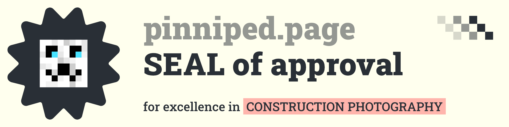

May 24th, 2026 Previous / Next
SEALS of approval
The projects and pages linked below are some of the best around. They’re so good that I was inspired to create a new award system: SEALS of approval. They make the praise look so much more professional and
official, while allowing the creators to display their award on their site.
The awards are numbered, but this in no way suggests that one is better than another. The same can be said for older versus newer
awards.
While the title of the page or project links to the award-winning creation, the award image links to where the creator posted their award. These are not necessarily the same place.
#001 — awarded May 24th, 2026
to David’s Website! for:
- unique, interesting, and creative design
- interactivity; ability to discover
- inclusion of music, animation, and art
#002 — awarded May 24th, 2026
to Milo Gavin for:
- top tier tunes
- ability to match the vibe of a client-provided reference
- availability and affordability
#003 — awarded May 24th, 2026
to Mathematics 4 Construction for:
- detailed preservation of progress
- variety of angles, seasons, etc.
- acceptance of others’ photos, for completion

Thanks for reading this blog post and taking the time to explore my SEALS of approval.
You cannot apply to receive a SEAL of approval. You and your creation must catch my attention naturally.